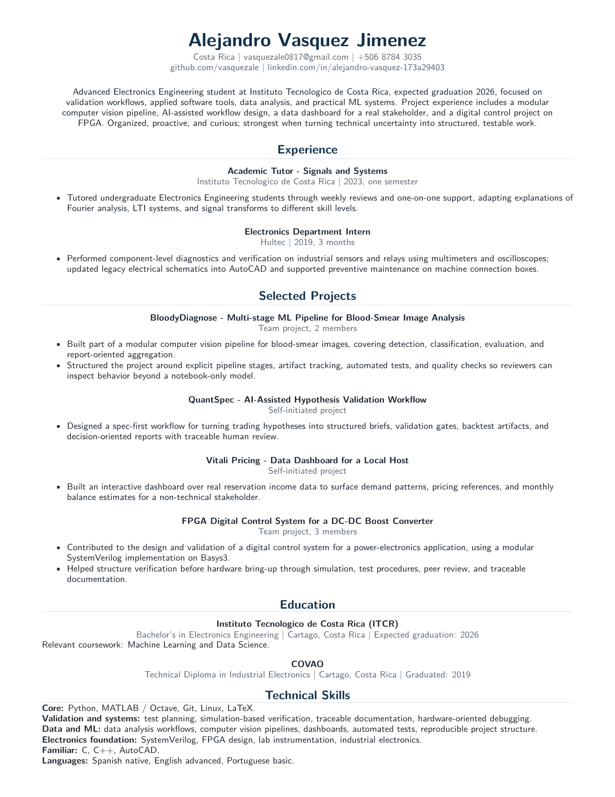

Building validated technical systems across software, data, ML, and electronics.
I am an advanced Electronics Engineering student focused on validation workflows,
applied software tools, data analysis, and practical ML systems. I work best when
technical uncertainty needs to become structured, testable work.
I like to understand how systems behave before I optimize them. In practice, that means
documenting decisions, validating outputs, and asking for feedback early enough to improve the work.
Selected work
Projects as evidence
01
BloodyDiagnose - Multi-stage ML Pipeline for Blood-Smear Image Analysis
Team projectML pipelineTested artifacts
Team project focused on a modular computer vision pipeline for blood-smear images,
covering detection, classification, evaluation, and report-oriented aggregation.
Evidence
Explicit pipeline stages, artifact tracking, automated tests, and quality checks.
Boundary
Presented as an ML engineering project, not as a medical product.
A spec-first workflow that turns trading hypotheses into structured briefs, validation
gates, backtest artifacts, and decision-oriented reports with traceable human review.
Evidence
Workflow design, decision records, validation artifacts, and documented review steps.
Boundary
Presented as workflow engineering, not as a financial performance claim.
FPGA Digital Control System for a DC-DC Boost Converter
Team projectPower electronicsSimulation-led validation
Team project in a power-electronics context. I contributed to the design and validation
of a digital control system using a modular SystemVerilog implementation on Basys3. The
project required connecting control logic, simulation evidence, lab constraints, and a
staged validation process before hardware bring-up.
Evidence
Simulation, test procedures, peer review, and traceable documentation before hardware bring-up.
Focus
Control logic organization, module-level reasoning, and verification steps in a power-electronics setting.
Role
Useful electronics foundation, included as support rather than the main identity signal.
A self-initiated dashboard over real reservation income data, built to surface demand
patterns, pricing references, and monthly balance estimates for a non-technical stakeholder.
Evidence
Interactive dashboard, real stakeholder context, interpretable analysis.
Tradeoff
Interpretability and decision support over unnecessary model complexity.
Breaking open-ended technical tasks into assumptions, test plans, simulation checks, and documented next steps.
02
Building practical data and ML tools
Creating dashboards, computer vision pipelines, evaluation reports, and automation that help people make decisions.
03
Bridging electronics and software contexts
Using hardware-aware debugging, lab instrumentation, SystemVerilog exposure, and software habits on engineering problems.
About
Early-career engineer with practical range
I am studying Electronics Engineering at Instituto Tecnologico de Costa Rica (ITCR).
My work sits between validation, applied software, data and ML tools, and electronics.
Across projects, I try to make technical work easier to inspect through clear assumptions,
reproducible structure, documented evidence, and honest limits.
I work in an organized and curious way, and I try to ask questions early when
requirements, assumptions, or expected outputs are unclear. I am still early-career,
so I value feedback loops and make an effort to share progress before everything feels final.

Contact
Open to internships and professional practice opportunities.